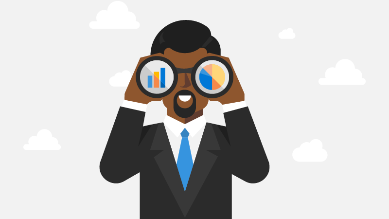

Attract customers and promote your apps
Once your app is in the Microsoft Store, it's time to get it in front of as many customers as possible. Partner Center offers many features that help you promote your products and grow your customer base, including ad campaigns, promo codes, sale pricing, and more.
Generate promotional codes
Promotional codes in Partner Center allow developers and publishers to offer free access to apps or add-ons published in the Microsoft Store. These codes can be used for marketing, customer support, beta testing, or transitioning users from legacy desktop apps to Microsoft Store apps.
Each code is associated with a unique redeemable URL that enables customers to install your app or add-on at no charge. Developers can choose between single-use or multiple-use codes, configure activation and expiration dates, and track code usage directly from the Partner Center dashboard.
Key capabilities
Generate single-use or multiple-use promotional codes.
Customize code activation and expiration windows.
Download and manage code orders in TSV format.
Distribute codes using your preferred communication method.
Review redemption metrics and availability for each order.
Ideal use cases
Rewarding early adopters or influencers.
Resolving customer service issues with free access.
Running beta programs for apps or add-ons.
Encouraging migration to MSIX-packaged apps.
Note
Your app must be fully published to the Microsoft Store before customers can redeem promotional codes.
For more info, see Generate promotional codes.
Custom app promotion campaign
Custom app promotion campaigns in Partner Center allow you to track user engagement and conversions by adding unique campaign identifiers (CIDs) to your app’s Microsoft Store URLs. These identifiers help measure the effectiveness of different marketing efforts, such as social media posts, ads, newsletters, or other outreach channels.
By appending a CID to your app’s web or protocol-based Store link, you can see how many users viewed the page and how many installed the app as a result of each campaign. Campaign data is available in acquisition reports within Partner Center.
Key capabilities
Append unique campaign IDs (CIDs) to your app’s Store URL.
Track page views and conversions per campaign.
Use HTML or protocol-style URLs for different platforms.
Access campaign performance in Partner Center reports.
Retrieve CID programmatically in your UWP app (Windows SDK support).
Ideal use cases
Measuring social media campaign effectiveness.
Tracking installs from email newsletters or blog posts.
Evaluating results of paid ad placements.
Identifying high-performing marketing sources.
Monitoring cross-platform promotion impact.
For more info, see Custom app promotion campaing.
Put apps and add ons on sale
You can promote your app or add-on in the Microsoft Store by offering it at a reduced price for a limited time. Sales can be configured with either a lower price tier or a percentage-based discount and targeted to specific customer groups or markets. Sale pricing appears with strikethrough formatting in the Store to highlight the promotional offer.
All sale settings are managed through the Pricing and availability section during an app submission and require a new submission to edit or cancel.
For more info, see Put apps and add ons on sale.
Promotion analytics
